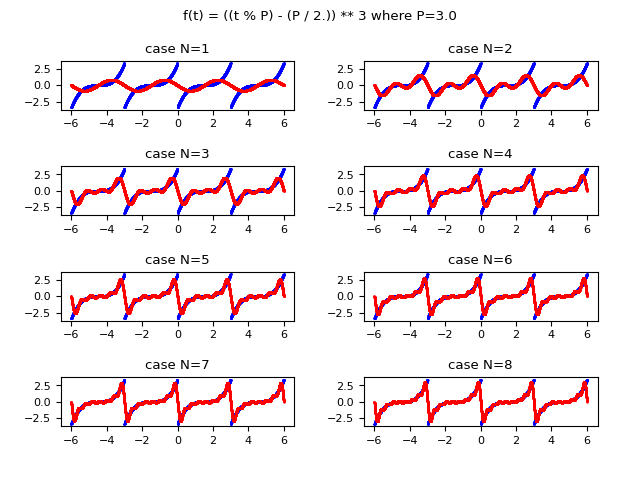
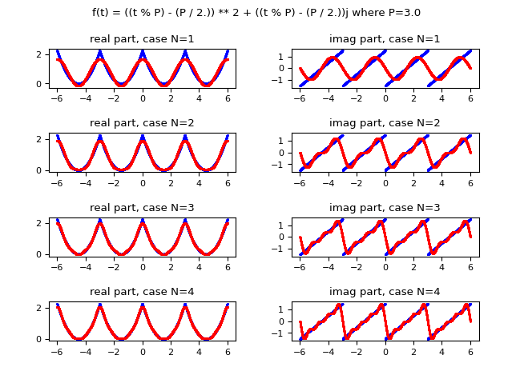
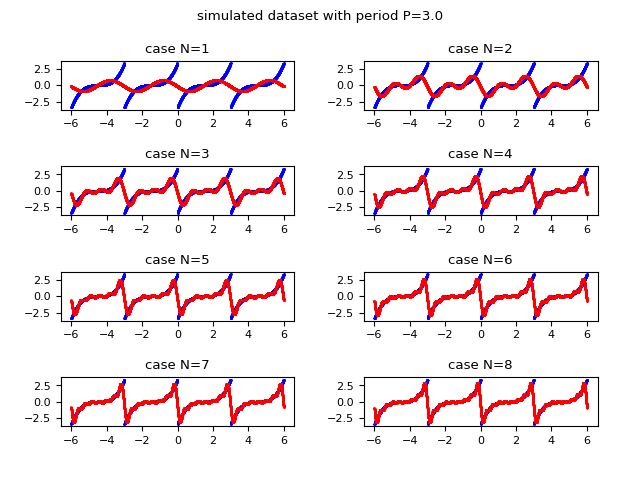
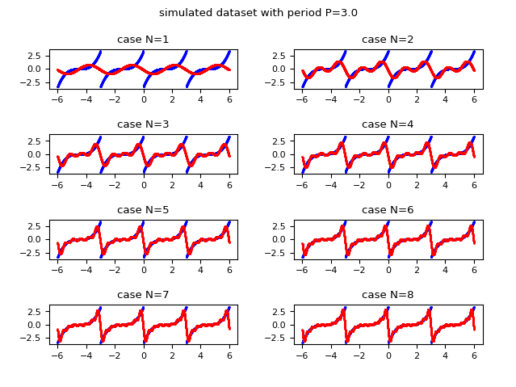
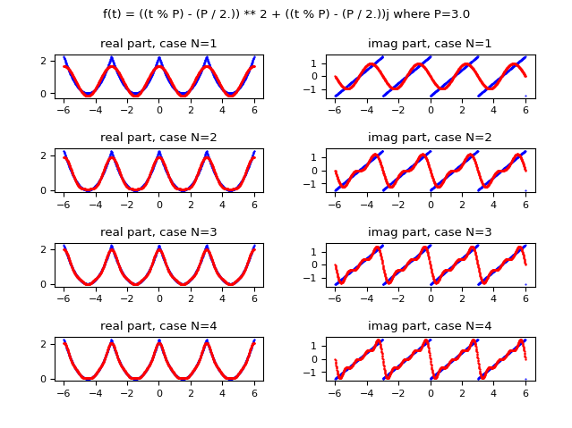
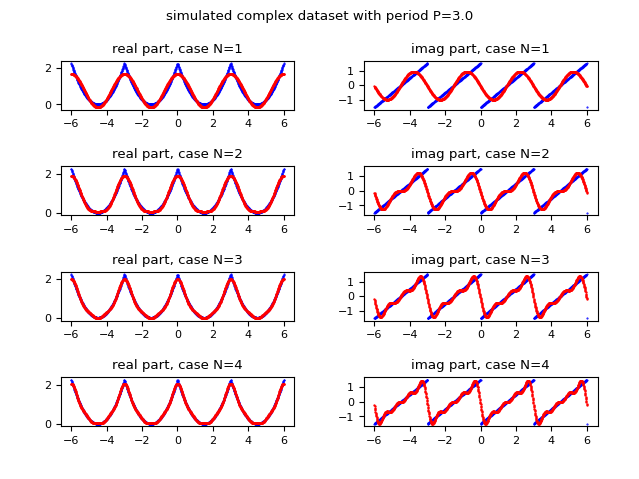
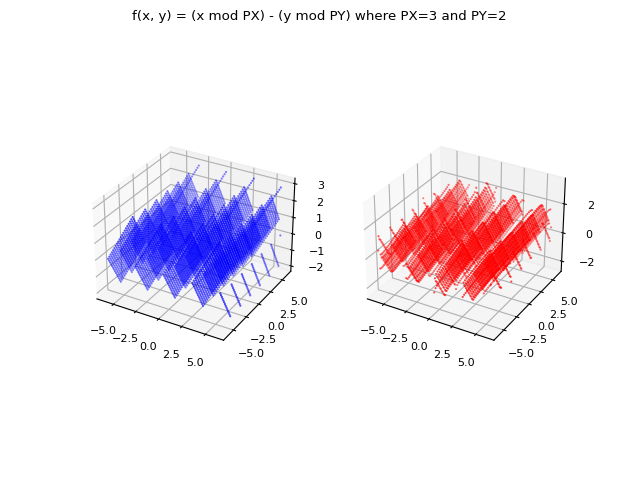
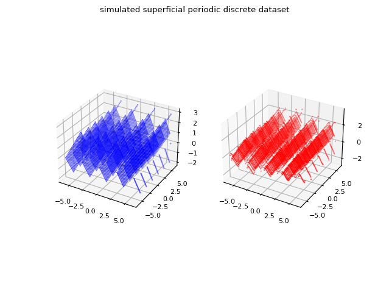

Fourier Series in Python
The Fourier series is a representation of a periodic function by an infinite sum (a series then)
of functions $\sin$ and $\cos$ multiplied by appropriate coefficients.
In the case of real-valued functions of one real variable, let $f(t)$ be a $\mathbb{R} \to \mathbb{R}$ periodic of period $P$ integrable, limited and continuous at intervals in the interval $[0, P]$:
such a function can be represented as real-form Fourier series:
$$ f(t) = \frac{a_0}{2} + \sum_{n=1}^\infty [a_n \cos{\frac{2 \pi n t}{P}} + b_n \sin{\frac {2 \pi n t}{P}}] $$
where the coefficients $a_n$ and $b_n$ are real and are defined as follows:
$$ a_0 = \frac{2}{P} \int_{0}^{P} f(t) \,dt $$
$$ a_n = \frac{2}{P} \int_{0}^{P} f(t) \cos{\frac{ 2 \pi n t}{P}}\,dt $$
$$ b_n = \frac{2}{P} \int_{0}^{P} f(t) \sin{\frac{2 \pi n t}{P}}\,dt $$
By applying Euler's formula, the function $f(t)$ can also be represented in the complex form:
$$ f(t) = \sum_{n=-\infty}^\infty c_n e^{\frac{2 i \pi n t}{P}}$$
where the coefficients $c_n$ are complex and so defined:
$$ c_n = \frac{1}{P} \int_{0}^{P} f(t) e^{\frac{-2 i \pi n t}{P}}\,dt $$
In the case of complex-valued functions of a real variable, let $f(t)$ be a $\mathbb{R} \to \mathbb{C}$ periodic function of period $P$ that is integrable, limited and continuous at intervals in the interval $[0, P]$:
the real form of the Fourier series cannot be used, but the complex form just shown can.
At points of discontinuity, the value of the Fourier series is equal to the mean of the left limit and the right limit.
Note: In some texts, in presenting the Fourier series formula, it is implicitly assumed that the period is $2 \pi$, whereas in this post
the more general form is given where the period can take any value and is denoted by $P$.
Note: In some texts the integrals in the Fourier series formula are calculated in the interval $[\frac{-P}{2}, \frac{P}{2}]$;
by a Fourier series theorem, the integration interval can be freely shifted and
the only important thing is that it is of equal length per period;
for simplicity of implementation here we have chosen the interval $[0, P].$
Note: In some texts, the period is denoted by $2P$, so $P$ would become the semi-period and this would allow to eliminate a factor $2$ in the numerator in the formulas in the real form;
however, in this post and in the related code, the period è denoted by $P$ and the factor $2$ in the numerator of the formulas remains.
There is an alternative way to calculate the complex coefficients of the Fourier series, and that is to use the Fourier transform.
The Fourier transform is used extensively in physics and engineering because it allows a time-dependent function to be written
as a linear combination of a basis of exponential functions. This post does not cover the theory or applications
of the Fourier transform, but merely uses it to calculate the complex $c_n$ coefficients of the Fourier series
since there is a relationship between the coefficients of the series and the Fourier transform.
Let $x(t)$ be an aperiodic function; the definition of the Fourier transform of the function $x(t)$ is as follows:
$$ X(\omega) = \int_{-\infty}^{+\infty} x(t) e^{-i \omega t} \,dt $$
For the purpose of calculating the coefficients of the Fourier series to represent a periodic function $f(t)$
it is not possible to apply the Fourier transform to this function, because it is periodic;
but we must consider only one period of this function (for example the interval $[0, P]$)
and then define an extended function $f_P(t)$ which takes the value of the function $f(t)$ for every $t in [0, P]$
and is worth $0$ for values of $t$ outside this interval. Formally:
$$
f_P(t) =
\begin{cases}f(t) & t \in [0, P] \\ 0 & t \notin [0, P] \end{cases}
$$
Let $F_P$ be the Fourier transform applied to $f_P(t)$: since the latter is worth $0$ outside the interval $[0, P]$, the following steps apply:
$$
F_P(\omega) = \int_{-\infty}^{+\infty} f_P(t) e^{-i \omega t} \,dt
= \int_{0}^{P} f_P(t) e^{-i \omega t} \,dt
= \int_{0}^{P} f(t) e^{-i \omega t} \,dt
$$
Recalling that $c_n$ holds:
$$ c_n = \frac{1}{P} \int_{0}^{P} f(t) e^{\frac{-2 i \pi n t}{P}}\,dt $$
setting:
$$ \omega_0 = \frac{2 \pi}{P} $$
we derive the relationship between any $c_n$ coefficient and the Fuorier transform by following the steps below:
$$
F_P(n \omega_0)
= \int_{0}^{P} f(t) e^{-i n \omega_0 t} \,dt
= \int_{0}^{P} f(t) e^{\frac{-2 i \pi n t}{P}} \,dt
= c_n P
$$
and then:
$$ c_n = \frac{1}{P} F_P(n \omega_0) $$
There is also an n-dimensional formulation of the Fourier series, but its real form is uncompact and of little use for practical purposes;
instead the complex form of the multidimensional Fourier series is compact and is obtained by generalization of the one-dimensional complex form.
In the two-dimensional case (2 independent variables) formula is as follows:
$$ f(x, y) = \sum_{n_1, n_2=-\infty}^\infty c_{n_1, n_2} e^{\frac{2 i \pi n_1 x}{P_x}} e^{\frac{2 i \pi n_2 y}{P_y}} $$
where
$$ c_{n_1, n_2} = \frac{1}{P_x} \frac{1}{P_y} \int_{0}^{P_y} \int_{0}^{P_x} f(x, y) e^{\frac{-2 i \pi n_1 x}{P_x}} e^{\frac{-2 i \pi n_2 y}{P_y}}\,dx\,dy $$
In the multidimensional case with $d$ dimensions it is good to use vector notation; let $\mathbf{x}$ be the vector of independent variables
and the formula for the multidimensional Fourier series in the complex form is as follows:
$$ f(\mathbf{x}) = \sum_{\mathbf{n} \in \mathbb{Z}^d} c_{\mathbf{n}} e^{\frac{2 i \pi n_1 x_1}{P_1}} ... e^{\frac{2 i \pi n_d x_d}{P_d}} $$
where
$$ c_{\mathbf{n}} = \frac{1}{P_1} ... \frac{1}{P_d} \int_{[0, P_1] \times ... \times [0, P_d]} f(\mathbf{x}) e^{\frac{-2 i \pi n_1 x_1}{P_1}} ... e^{\frac{-2 i \pi n_d x_d}{P_d}}\,d\mathbf{x} $$
This post is organized in demos, which are small programs written in Python 3.x using the SciPy library
(also need the libraries NumPy and MatPlotLib)
showing various case histories of approximating a periodic function by Fourier series.
Thanks to Prof. Fausta D'Acunzo from Preparazione 2.0 for the theoretical support provided on Fourier series and transform.
To get the code see paragraph Download the complete code at the end of this post.
Demo index
The demo #1 shows the approximation of a periodic function via Fourier series by applying the definition in the real form.
Of course, summation cannot go all the way to infinity, so the summation cycles will have to be limited to a value of $N$
not very large, for obvious performance reasons, but enough to have an acceptable approximation.
As far as integral calculations are concerned, the SciPy library is used and in particular the quad function;
please refer to the post Integral Calculus in Python on this site for details about integration in Python.
The demo #2 shows the approximation of the same periodic function but through Fourier series by applying the definition in the complex form.
As for the calculations of complex integrals we use the SciPy library integrating separately the real and imaginary part.
The demo #3 shows the approximation of a complex-valued periodic function by Fourier series applying of course the definition in the complex form.
From an application point of view, you might wonder what is the point of approximating a function if you already know the function itself.
The answer is simple (and the one provided here is not the only possible answer): in the real world, the periodic function may not be known
but may be available in the form of discrete data (e.g., acquired via sensors or field measurements); in this case the approximation by Fourier series
becomes very useful obviously by performing calculations of integrals using discrete integration techniques.
The demo #4 and the demo #5 show how to obtain the Fourier series starting from a discrete set of values (and therefore no longer from an analytical function given a priori);
precisely the demo #4 operates on a real-valued dataset while the demo #4 on a complex-valued dataset.
The demo #6, the demo #7 and the demo #8 show how to compute the complex coefficients $c_n$ using the Fourier transform;
in particular demo #6 applies to the continuous case and requires the use of integrals,
while the other two apply to the discrete case and do not require integral calculus;
in particular demo #8 uses the function of the SciPy library to compute the fast Fourier transform which is an optimized algorithm
to compute the discrete Fourier transform efficiently.
The demo #9 and the demo #10 are like demo #6 and demo #8
but apply to a complex-valued function and a complex-valued discrete dataset, respectively.
The demo #11 and the demo #12 concern the two-dimensional Fourier series and apply respectively
to the case of a real-valued function of two real variables and to a two-dimensional discrete dataset (in the sense of a set of points lying on a surface in three-dimensional space), respectively.
The reader is invited to generalize these cases, for example by extending demo #11 and demo #12
to the case of functions (or datasets) with complex values and/or to the n-dimensional case (where the vector notation is certainly more suitable than having a variable for each dimension).
Calculation of the Fourier series by applying the definition
Demo #1: Calculation of the Fourier series in the real form of a real-valued function of one real variable
Let the function $\mathbb{R} \to \mathbb{R}$ be given:
$$ f(t) = ((t \mod P) - (P / 2)) ^ 3, P=3$$
which is periodic of period equal to $3$, finite and step continuous.
Below is the example of Python code that applies the definition of the Fourier series in real form to approximate that function:
The following image shows graphically how the function approximated with the Fourier series improves in approximation as the value of $N$ (the maximum index of the summation) increases. Observe that already for $N$ equal to $8$ an acceptable approximation is obtained.

Comparison of the graphs as $N$ changes: in blue the original real-valued function
and in red the function approximated using the real form of the Fourier series.
and in red the function approximated using the real form of the Fourier series.
Demo #2: Calculation of the Fourier series in the complex form of a real-valued function of one real variable
Let the function $\mathbb{R} \to \mathbb{R}$ be given:
$$ f(t) = ((t \mod P) - (P / 2)) ^ 3, P=3$$
which is periodic of period equal to $3$, finite and step continuous.
Below is the example of Python code that applies the definition of the Fourier series in complex form to approximate that function:
The following image shows graphically how the function approximated with the Fourier series improves in approximation as the value of $N$ (the maximum index of the summation) increases. Observe that already for $N$ equal to $8$ an acceptable approximation is obtained.

Comparison of the graphs as $N$ changes: in blue the original real-valued function
and in red the function approximated using the complex form of the Fourier series.
and in red the function approximated using the complex form of the Fourier series.
Demo #3: Calculation of the Fourier series in the complex form of a complex-valued function of one real variable
Let the function $\mathbb{R} \to \mathbb{C}$ be given:
$$ f(t) = ((t \mod P) - (P / 2)) ^ 2 + ((t \mod P) - (P / 2)) i, P=3$$
which is periodic of period equal to $3$, finite and step continuous.
Below is the example of Python code that applies the definition of the Fourier series in complex form to approximate that function:
The following image shows graphically how the function approximated with the Fourier series improves in approximation as the value of $N$ (the maximum index of the summation) increases; on the left column is shown the real part, on the right column the imaginary one. Observe that already for $N$ equal to $4$ an acceptable approximation is obtained.

Comparison of the graphs as $N$ changes: in blue the original complex-valued function
and in red the function approximated using the complex form of the Fourier series;
on the left column is shown the real part, on the right column the imaginary one.
and in red the function approximated using the complex form of the Fourier series;
on the left column is shown the real part, on the right column the imaginary one.
Demo #4: Calculation of the Fourier series in the real form of a periodic, discrete, real-valued dataset
Let a discrete dataset, which in this demo is generated by the function $\mathbb{R} \to \mathbb{R}$:
$$ f(t) = ((t \mod P) - (P / 2)) ^ 3, P=3$$
which is periodic of period equal to $3$, finite and step continuous.
As mentioned above, in the real world the dataset is not generated by a function but obtained through sensors, sampling, and field measurements.
Below is the example of Python code that applies the definition of the Fourier series in real form to approximate such a discrete dataset:
The following image shows graphically how the function approximated with the Fourier series improves in approximation as the value of $N$ (the maximum index of the summation) increases; Observe that already for $N$ equal to $8$ an acceptable approximation is obtained.

Comparison of graphs as $N$ changes: in blue the original real-valued dataset
and in red the discrete approximation obtained using the real form of the Fourier series.
and in red the discrete approximation obtained using the real form of the Fourier series.
Demo #5: Calculation of the Fourier series in the complex form of a periodic, discrete, real-valued dataset
Let a discrete dataset, which in this demo is generated by the function $\mathbb{R} \to \mathbb{R}$:
$$ f(t) = ((t \mod P) - (P / 2)) ^ 3, P=3$$
which is periodic of period equal to $3$, finite and step continuous.
As mentioned above, in the real world the dataset is not generated by a function but obtained through sensors, sampling, and field measurements.
Below is the example of Python code that applies the definition of the Fourier series in real form to approximate such a discrete dataset:
The following image shows graphically how the function approximated with the Fourier series improves in approximation as the value of $N$ (the maximum index of the summation) increases; Observe that already for $N$ equal to $8$ an acceptable approximation is obtained.
Comparison of graphs as $N$ changes: in blue the original real-valued dataset
and in red the discrete approximation obtained using the complex form of the Fourier series.
and in red the discrete approximation obtained using the complex form of the Fourier series.
Calculating the Fourier series by applying the Fourier transform
Demo #6: Calculation of the Fourier series in the complex form of a real-valued function of one real variable with coefficients calculated by Fourier transform
Let the function $\mathbb{R} \to \mathbb{R}$ be given:
$$ f(t) = ((t \mod P) - (P / 2)) ^ 3, P=3$$
which is periodic of period equal to $3$, finite and step continuous.
In demos #1,#2 and #3 we calculated the coefficients of the Fourier series (real in demo #1, complex in the other two) using the definition
of the coefficients as described at the beginning of the post.
In this demo instead we show how to use the Fourier transform to calculate the coefficients of the complex form of the Fourier series,
by applying the relationship between the $c_n$ coefficients and the Fourier transform as always described in the initial part of this post.
Below is an example of Python code that approximates the real-valued function via the series in the complex form by calculating the coefficients using the Fourier transform:
The following image shows graphically how the function approximated with the Fourier series improves in approximation as the value of $N$ (the maximum index of the summation) increases; Observe that already for $N$ equal to $8$ an acceptable approximation is obtained.
Comparison of the graphs as $N$ changes: in blue the original real-valued function
and in red the same function approximated using the complex form of the Fourier series
whose complex coefficients are calculated using the Fourier transform.
and in red the same function approximated using the complex form of the Fourier series
whose complex coefficients are calculated using the Fourier transform.
Demo #7: Computation of Fourier series in the complex form of a periodic, discrete, real-valued dataset with coefficients computed by discrete Fourier transform
Let a discrete dataset, which in this demo is generated by the function $\mathbb{R} \to \mathbb{R}$:
$$ f(t) = ((t \mod P) - (P / 2)) ^ 3, P=3$$
which is periodic of period equal to $3$, finite and step continuous.
As mentioned in demo #4, in the real world the dataset is not generated by a function but obtained through sensors, sampling, field measurements.
In demo #6 we calculated the coefficients of the Fourier series in complex form using the definition of coefficients as described at the beginning of the post.
In this demo we use the same relationship, but the calculation of the Fuorier transform, since we are dealing with discrete values, is calculated by applying the discrete Fuorier transform
which is defined in the following way:
$$ F_P(t) = \sum_{k=0}^{K-1} x_k e^{\frac{-2 i \pi k t}{K}} $$
where $K$ is the number of values in the dataset and $x_k$ is; the k-th discrete value in the dataset (starting at $0$).
Below is an example of Python code that approximates the dataset via the series in the complex form by calculating the coefficients using the discrete Fourier transform:
The following image shows graphically how the function approximated with the Fourier series improves in approximation as the value of $N$ (the maximum index of the summation) increases; Observe that already for $N$ equal to $8$ an acceptable approximation is obtained.

Comparison of the graphs as $N$ changes: in blue the original real-valued dataset
and in red the discrete approximation obtained using the complex form of the Fourier series
whose complex coefficients are calculated via the discrete Fourier transform.
and in red the discrete approximation obtained using the complex form of the Fourier series
whose complex coefficients are calculated via the discrete Fourier transform.
Demo #8: Computation of the Fourier series in the complex form of a periodic, discrete, real-valued dataset with coefficients computed by fast Fourier transform
Let a discrete real-valued dataset, which in this demo is generated by the function $\mathbb{R} \to \mathbb{R}$:
$$ f(t) = ((t \mod P) - (P / 2)) ^ 3, P=3$$
which is periodic of period equal to $3$, finite and step continuous.
As mentioned in demo #4, in the real world the dataset is not generated by a function but obtained through sensors, sampling, field measurements.
In demo #7 we calculated the coefficients of the Fourier series in complex form using the discrete Fourier transform.
In this demo we use the same technique, but the calculation of the Fuorier transform is calculated by applying the fast Fuorier transform
available in the SciPy library using the Python function scipy.fft.fft.
Below is an example of Python code that approximates the real-valued dataset via the series in the complex form by calculating the coefficients using the fast Fourier transform:
The following image shows graphically how the function approximated with the Fourier series improves in approximation as the value of $N$ (the maximum index of the summation) increases; Observe that already for $N$ equal to $8$ an acceptable approximation is obtained.
Comparison of the graphs as $N$ changes: in blue the original real-valued dataset
and in red the discrete approximation obtained using the complex form of the Fourier series
whose complex coefficients are calculated via the fast Fourier transform.
and in red the discrete approximation obtained using the complex form of the Fourier series
whose complex coefficients are calculated via the fast Fourier transform.
Demo #9: Calculation of the Fourier series in the complex form of a complex-valued function of a real variable with coefficients calculated by Fourier transform
Let the function $\mathbb{R} \to \mathbb{C}$ be given:
$$ f(t) = ((t \mod P) - (P / 2)) ^ 2 + ((t \mod P) - (P / 2)) i, P=3$$
which is periodic of period equal to $3$, finite and step continuous.
In demo #6 we calculated the coefficients of the Fourier series in the complex form using the Fourier transform applied to a real-valued function
using the relationship between the $c_n$ coefficients and the Fourier transform as described in the initial part of this post.
In this demo instead we show how to use the Fourier transform applied to a complex-valued function
to calculate the coefficients of the Fourier series in the complex form using the same procedure.
Below is an example of Python code that approximates the complex-valued function via the series in the complex form by calculating the coefficients using the Fourier transform:
The following image shows graphically how the function approximated with the Fourier series improves in approximation as the value of $N$ (the maximum index of the summation) increases; on the left column is shown the real part, on the right column the imaginary one. Observe that already for $N$ equal to $4$ an acceptable approximation is obtained.

Comparison of the graphs as $N$ changes: in blue the original real-valued function
and in red the discrete approximation obtained using the complex form of the Fourier series
whose complex coefficients are calculated via the fast Fourier transform.
and in red the discrete approximation obtained using the complex form of the Fourier series
whose complex coefficients are calculated via the fast Fourier transform.
Demo #10: Computation of the Fourier series in the complex form of a periodic, discrete, complex-valued dataset with coefficients computed by fast Fourier transform
Let a discrete complex-valued dataset, which in this demo is generated by the function $\mathbb{R} \to \mathbb{C}$:
$$ f(t) = ((t \mod P) - (P / 2)) ^ 2 + ((t \mod P) - (P / 2)) i, P=3$$
which is periodic of period equal to $3$, finite and step continuous.
As mentioned in demos #4 and #8, in the real world the dataset is not generated by a function but obtained through sensors, sampling, field measurements.
In demo #8 we calculated the coefficients of the Fourier series in complex form using the discrete fast Fourier transform from real discrete data.
In this demo, the same technique is used, but the fast Fuorier transform is computed by applying the fast Fuorier transform from complex discrete data;
the function of Scipy to use is the same of the demo #8, that is scipy.fft.fft.
Below is the example of Python code that approximates the dataset to complex values via the series in the complex form by calculating the coefficients by means of the fast Fourier transform:
The following image shows graphically how the function approximated with the Fourier series improves in approximation as the value of $N$ (the maximum index of the summation) increases; on the left column is shown the real part, on the right column the imaginary one. Observe that already for $N$ equal to $4$ an acceptable approximation is obtained.

Comparison of the graphs as $N$ changes: in blue the original real-valued dataset
and in red the discrete approximation obtained using the complex form of the Fourier series
whose complex coefficients are calculated via the fast Fourier transform.
and in red the discrete approximation obtained using the complex form of the Fourier series
whose complex coefficients are calculated via the fast Fourier transform.
Two-dimensional Fourier series calculation
Demo #11: Calculating the Fourier series in the complex form of a real-valued function of two real variables
Let the function $\mathbb{R}^2 \to \mathbb{R}$ be given:
$$ f(x, y) = (x \mod PX) + (y \mod PY), PX=3, PY=3$$
which is periodic of period equal to $3$ on variable $x$ and $2$ on variable $y$, finite and continuous at times.
Here is the example of Python code that applies the definition of the Fourier series in the two-dimensional complex form to approximate that function:
The following image graphically compares the original function and the approximate function for $N=24$.
Note:The code of the demo is not optimized and is a bit slow; it has not been deliberately optimized to make it easy to the comprehension of the code, so much its scope is demonstrative and in the real world normally is not used such mechanism but we use the one that uses the two-dimensional Fourier transform (see next demo).

Comparison of graphs for $N=24$: in blue the original real-valued function of two variables
and in red the same function approximated using the two-dimensional complex form of the Fourier series.
and in red the same function approximated using the two-dimensional complex form of the Fourier series.
Demo #12: Computation of the Fourier series in the complex form of a periodic, discrete, two-dimensional, real-valued dataset with coefficients computed by fast Fourier transform
Let a discrete real-valued dataset, which in this demo is generated by the function $\mathbb{R}^2 \to \mathbb{R}$:
$$ f(x, y) = (x \mod PX) + (y \mod PY), PX=3, PY=3$$
which is periodic of period equal to $3$ on variable $x$ and $2$ on variable $y$, finite and continuous at times.
As mentioned in demos #4, #8 and #10, in the real world the dataset is not generated by a function but obtained through sensors, sampling, field measurements.
Nella demo #8 si sono calcolati i coefficienti della serie di Fourier nella forma complessa utilizzando la trasformata discreta veloce di Fourier nel caso di un dataset monodimensionale
In this demo, the same technique is exploited, but the Fuorier transform is computed by applying the fast Fuorier transform
to the case of a two-dimensional dataset.
The Scipy function to use is scipy.fft.fft2.
Below is the example of Python code that approximates the two-dimensional real-valued dataset via the series in the complex form by calculating the coefficients by means of the two-dimensional fast Fourier transform:
The following image graphically compares the original dataset and the approximation for $N=24$.

Comparison of graphs for $N=24$: in blue the original two-dimensional real-valued dataset
and in red the discrete approximation obtained using the two-dimensional complex form of the Fourier series
whose complex coefficients are calculated via the two-dimensional fast Fourier transform.
and in red the discrete approximation obtained using the two-dimensional complex form of the Fourier series
whose complex coefficients are calculated via the two-dimensional fast Fourier transform.
Download of the complete code
The complete code is available at fourier-series.
These materials are distributed under MIT license; feel free to use, share, fork and adapt these materials as you see fit.
Also please feel free to submit pull-requests and bug-reports to this GitHub repository or contact me on my social media channels available on the top right corner of this page.